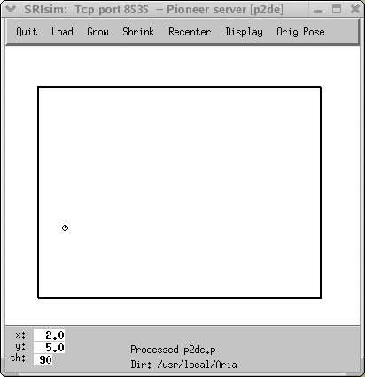
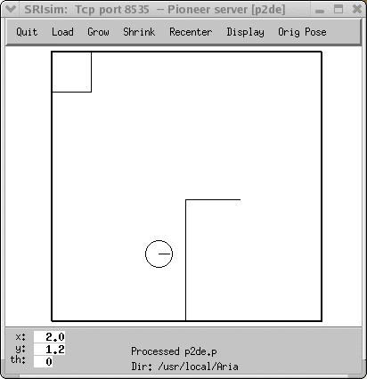

|
|||||||
| [ Home ] | [ Software ] | [ Curriculum ] | [ Hardware ] | [ Community ] | [ News ] | [ Publications ] | [ Search ] |
|
The Aria SimulatorThe Aria simulator is the officially supplied simulator for Pioneer robots. It is also called SRIsim. It is loaded with all kinds of functionality and features. However, since we will be using Aria through Pyro, there isn't much that needs to be learned about it. Pyro simplifies and generalizes the way you program any robot, including the Pioneers. You do need to familiarize yourself with a few attributes of the Aria user interface and learn how to define a simulated world of your own.
The Aria User InterfaceIf you have Aria running, explore the menus available in the Aria/SRIsim window. You will need to learn how to adjust the window size and scale the world display so it fits in the window. You can use the Shrink and Grow buttons for scaling the world display. Additionally, there are several ways to position, relocate the robot in the world using your mouse buttons. Here is a summary of all the mouse operations:
Next, focus your attention on the bottom-left part of the SRIsim window. Notice that the location and orientation of the robot in the office world are specified as x, y, and th (for theta, the angle). The origin (0.0, 0.0) lies in the bottom left corner of the floor plan. The robot's orientation is shown at 90 degrees (pointing north or up). 0 degrees is located in the east direction. The x and y coordinates are specified in meters. Thus, the location of the robot, as shown is 4.5 meters away from the bottom left corner in the x direction and 2.2 meters in the y direction. Try moving the robot to various places in the world and also try reorienting it to get familiarized with the coordinate system being used here. This will come in useful later.
Creating Aria WorldsAria provides facilities for users to define their own simulated worlds. You might want to create a world looks like your environment so that you'll have it to use as a testing ground before setting a real robot off into your real environment.A world file is a text file that contains the definition of various components in the simulated world. All Aria world files end in the extension .world. Basically, a world is made up of line segments specified in a coordinate system with (0,0) at the bottom left corner, x values incrementing as you go right and y values incrementing as you go up. In the world file, you start by defining the width and the height of the world on the first two lines as shown below: width 20000 height 15000The units used are millimeters. Thus the world above is 20 meters long and 15 meters across. The width and height above refer to the width and height of the rectangle on your display. Any line starting with a semicolon is treated as a comment. You can also use a semicolon anywhere in a line and everything following the semicolon until the end of the line is treated as a comment. Line segments are then specified, generally, one segment on each line, by giving the (x1, y1) and the (x2, y2) coordinates of the line (in the coordinate system and units mentioned above). For example, the following four lines specify the edge of the world. ; The world boundary 0 0 0 15000 0 0 20000 0 20000 0 20000 15000 0 15000 20000 15000In a world, the starting position and orientation of the robot can be specified using a position command (the numbers are x, y, and theta): ; the starting location of the robot position 2000 5000 90
Exercise 1: A First WorldCreate a file called, first.world in your home directory with the following contents. Start Pyro and then load the Aria simulator with this world.; A first world file ; The world dimensions. Units are in mm, thus 20000 mm is 20 meters width 20000 height 15000 ; The world boundary. 0 0 0 15000 0 0 20000 0 20000 0 20000 15000 0 15000 20000 15000 ; the starting location of the robot position 2000 5000 90You should see the world as shown below: 
Exercise 2: A different worldCreate another world file that looks like the world shown below. Its dimensions are 5 meters X 5 meters.
 Next section: The Stage Simulator or Using the Pioneer Robot or Using the Khepera Robot
Pyro Modules Table of Contents
Modules
Additional ResourcesReference: PyroSiteNotes
|
| [ Home ] | [ Software ] | [ Curriculum ] | [ Hardware ] | [ Community ] | [ News ] | [ Publications ] | [ Search ] |
 View Wiki Source | Edit Wiki Source | Mail Webmaster
View Wiki Source | Edit Wiki Source | Mail Webmaster | |||||||